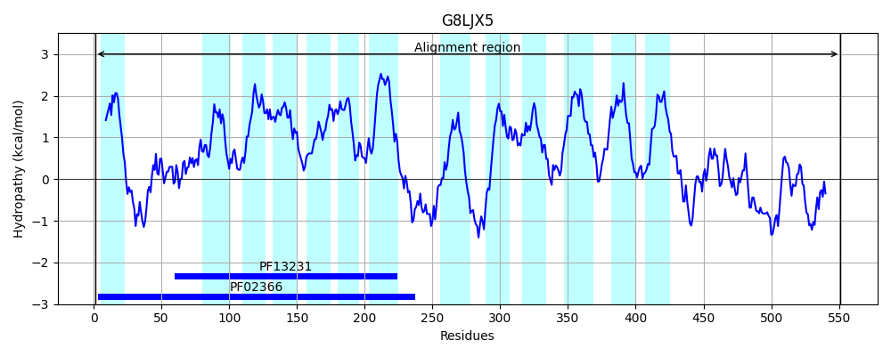
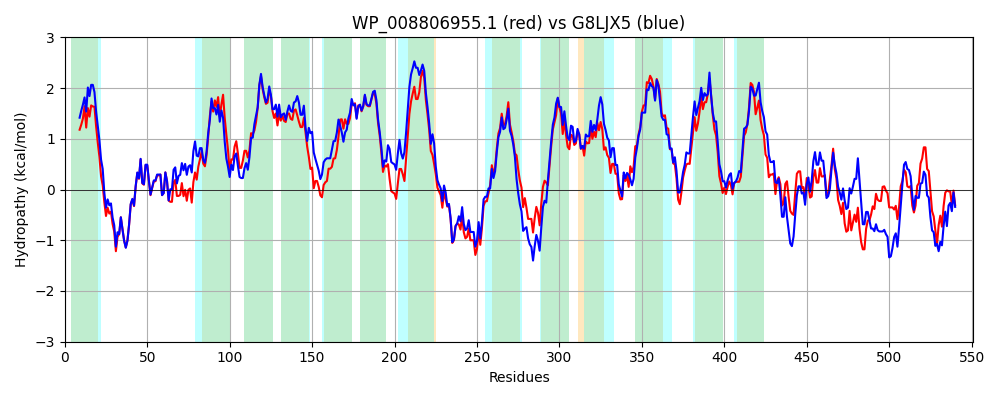

Hit Accession: G8LJX5
Hit TCID: 9.B.142.2.2
Hit Description: gnl|BL_ORD_ID|4849 gnl|TC-DB|G8LJX5|9.B.142.2.2 Undecaprenyl phosphate-alpha-4-amino-4-deoxy-L-arabinose arabinosyl transferase OS=Enterobacter cloacae EcWSU1 GN=arnT PE=3 SV=1
Mach Len: 551
e:0.000000
Query TMS Count : 13
Hit TMS Count: 13
TMS-Overlap Score: 11.250000
Predicted Substrates:None
BLAST Alignment:
Score: 2155 , Bit scores: 834 bits, E-value: 0.0e+00, Alignment length: 551, Percentage identity: 70
Query: 1 MKSIRYGVSLIALFALYYLLPLNFRLLWQPDETRYAEISREMLATGDWVVPHFLGLRYFEKPIAGYWINSIGQWLFGHNNFGVRFGSVFAITMTALLVAWLAWRVFRDKKVAVLSPVIFLTAMLVYAIGTYAVLDPMITLWLALAMCSFWGAAQAQSRSGKILGYALLGVACGMGVMTKGFLALAVPVVGVLPWVIARKRWREVLTYGWLAVIVCTLVVLPWGLAIAQREPDFWRYFFWVEHIQRFAEKDAQHKAPFWYYIPFLIAGSLPWLALLPGALKRGWLERDEARGALYLLGWVAMPFLFFSIAKGKLPTYILPCFAPLSILMARYALEAAKTGAKALRINGMINLGVGLLGLIAVLVVSPWGVMHKPVWTKIELYKCLLAAIAFAVWALMGWLAMKNPGRRWSLAALCPLGLALLVGFAIPDRVIDSKQPQFLVDIVSESLQPSRYVLTNNVGIAGGLAWELKRSDIIMFDKQGELKYGLDWPDAQGSFVSQAGFADWLATHRQQGPVSLVLLMDKGESMVDLPLPKPDNAYELGRVVFLQYLPQ 551
MK+ RYG++L+ALF +YYL+P++ RLLWQPDETRYAEISREMLA+GDW+VPHFLGLRYFEKPIAGYWINSIGQ LFGH NF VR G++F+ +TALLV W+AWR++RDK+VA+ S +IFLT LVY IGTYAVLDP+ITLWL AMCSFW A+QA++ +GK GY LLG+ACGMGVMTKGFLALAVPV+GVLPWVIA+KRW+EVL +GWLA++ C L+VLPW LAIA REPDFWRYFFWVEHIQRFA+ DAQHKAPFWYY+PFL+AGSLPWLALLPGA ++GW ERD G YLLGWV MP LFFSIAKGKLPTYILPCFAPL+ILMARYA AA GA+ALRING INL G++G++A LVVSPWGV PVWT +ELYK A +AF VWA +GW ++ +RW LAALCP G+ALL+GFAIP+ V+DSKQPQ LVD + + LQ SR+VL NNVG+A GLAWELKR+DII+F + GEL YGL +PD + FV + FA WLATHRQQG VSLV+L+ K + + LP+PD+ Y GR+ +LQYLPQ
Sbjct: 1 MKAARYGLALLALFIVYYLIPIDIRLLWQPDETRYAEISREMLASGDWIVPHFLGLRYFEKPIAGYWINSIGQLLFGHTNFAVRAGAIFSTGLTALLVIWMAWRLWRDKRVAIFSGLIFLTLFLVYGIGTYAVLDPIITLWLVAAMCSFWLASQAETVAGKAGGYVLLGLACGMGVMTKGFLALAVPVIGVLPWVIAQKRWKEVLIFGWLAIVSCVLIVLPWALAIAHREPDFWRYFFWVEHIQRFAQSDAQHKAPFWYYLPFLLAGSLPWLALLPGAFRQGWRERDNTGGGFYLLGWVVMPLLFFSIAKGKLPTYILPCFAPLAILMARYACIAADKGARALRINGGINLAFGVIGVVAALVVSPWGVAKHPVWTSVELYKVFCAVLAFLVWAAVGWFTVRQSAQRWWLAALCPAGVALLIGFAIPNLVVDSKQPQSLVDTIRDPLQSSRFVLANNVGVASGLAWELKRNDIILFGQSGELSYGLAYPDVKDRFVEKDNFAQWLATHRQQGGVSLVILLSKHDDIKRAHLPEPDSLYIQGRLAWLQYLPQ 551 | Protein Hydropathy Plots: |
|---|
 |  |
Pairwise Alignment-Hydropathy Plot:
|
|---|
|  |